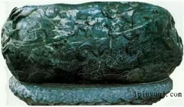

渎山大玉海是一件巨型贮酒器，是元世祖忽必烈在1265年令皇家玉工制成，意在反映元初版图之辽阔，国力之强盛。
渎山大玉海的制作，继承和发展了中国琢玉工艺上“量材取料”和“因材施艺”的传统技巧，在俏色方面也有独到之处。它是由一整块黑质白章的椭圆形大玉石精雕而成，玉质斑驳变幻，玉瓮内部掏空，空膛深55厘米，体外周身饰波涛汹涌的大海图案，下部以浮雕加阴线勾刻的手法表现旋卷的波浪，上部以阴刻曲线勾划漩涡作底纹。 周身浮雕没于海浪波涛中的龙、鹿、猪、马、犀、螺等，形体各异，神采倶佳，制作采用浮雕和线刻相结合的表现手法，既粗犷豪放，又细致典雅，动物造型兼具写实气质和浪漫色彩。